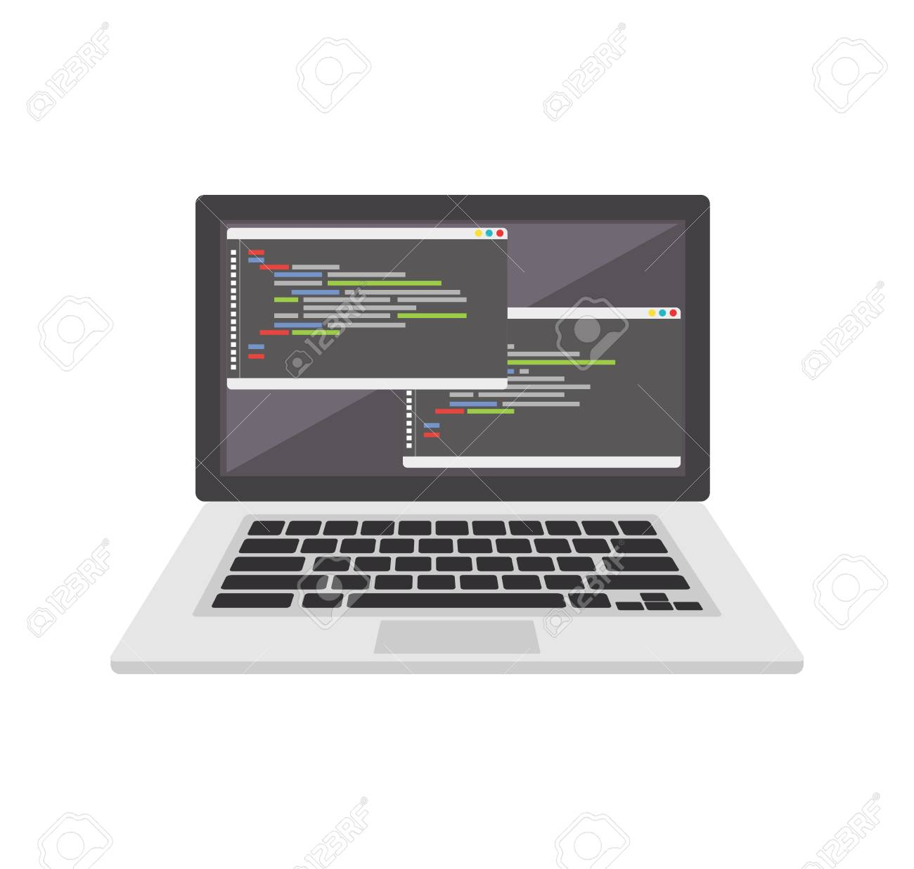

Tak už umíte základy HTML a CSS. V následujících kapitolách na bázi HTML vytvoříme cvičnou stránku o nás, o Web K&T, kdo jsme, co děláme atd. Zkrátka si vytvoříme jednoduchou firemní/propagační web. Ve Visual studiu si vytvořte nový soubor a zase si ho uložte (jak nazev.html) někam kde se k němu rychle dostanene. Do souboru si přepište kód níže, a pak si ho po řádcích vysvětlíme.
Takže začneme prvním řádkem. Je tam Head. Ten pokračuje až na řádek sedm. Vše mezi tím (2-6) je takzvaně v Headu, v hlavičce. Head slouží v prohlížečích k tomu, že ho načtou přednostně. Dává se tam většinou Style a potom nějaké doplňky jako ikonka a nápis karty. A teď k tomu Style. Funguje podobně jako Head, vše co je mezi prvním style(řádek 2) a druhým(řádek 6) má nějakou specíální úlohu. U style to je že do něj můžeme psát v CSS což je třeba id z minulé kapitoly. V parametrech id si můžeme hrát s parametry objektů jako jsou barva, velikost či styl písma. Jak vidíte v parametru color, máme tam #555, což je tmavě šedá. Pokud si barvy chcete vyhledat, jmenuje se to hex. Teď si vysvětlíme co je center,body a h1:
1 <head>2 <style>3 #Nadpis1 {4 color: #555;5 }6 </style>7 </head>8 <body>9 <center>10 <h1 id="Nadpis1">Web K&T</h1>11 </center>12 </body>K čemu je body je trošku kontroverzní, každopádně tím nic nezkazíte a vyhnete se zbytečným errorům. Center také jako předešlé tagy začíná na jednom řádku a končí na jiném s tím, že v sobě má zase část kódu. Vše co je v něm, bude zarovnáno veprostřed (HTML klasicky začíná zleva). A co se tíče h1, to je nadpis. Tag p slouží k delším textům jako je tento. Ale h se používá na větší nadpisy. Číslo může mít od jedné do šesti, jedna je největší a šest je menší než klasický p tag. Zkuste sami jedničku nahradit jiným číslem. A teď výsledek toho co jsme zatím naprogramovali:
H1 si dáme do rámečku. Ten se dělá v html tagem div. A zas k němu doplníme id, které si pod # dáme do Style. A v id Nadpis1 přidáme font-family, což určuje vzhled písma:
1 <head>2 <style>3 #Nadpis1 {4 color: #555;5 font-family: Verdana;6 }7 #Ramecek {8 background-color: gold;9 }10 </style>11 </head>12 <body>13 <center>14 <div id="Ramecek">15 <h1 id="Nadpis1">Web K&T</h1>16 </div>17 </center>18 </body>Výsledek:
Tím se pozadí změnilo na zlatou. Super co? Teď bude mít zlaté pozadí vše co bude "v" tom divu. Zkuste tam přidat třeba p a nějaký text. Což uděláme. ale ještě předtím si ukážeme co je br. Tag <br> nám udělá jednu mezeru. Asi jako když zmáčknete Enter. A my ten text nechceme mít přilepený na nadpis, takže tam tak dva/tři použijeme. Rovnou doplníme text:
1 <head>2 <style>3 #Nadpis1 {4 color: #555;5 font-family: Verdana;6 }7 #Ramecek {8 background-color: gold;9 }10 </style>11 </head>12 <body>13 <center>14 <div id="Ramecek">15 <h1 id="Nadpis1">Web K&T</h1>16 <br>17 <br>18 <br>19 <p id="Text1">Jsme parta nadšenců atd.</p>20 </div>21 </center>22 </body>Jsme parta nadšenců atd.
Ten text není moc hezký, ale my jsme si u něj rovnou udělali id, takže v style ho můžeme s pomocí font-family hned změnint, a dáme si ho do samostatného divu s jiným pozadím. A ten nadpis posuneme pomocí br dál odshora.:
1 <head>2 <style>3 #Nadpis1 {4 color: #555;5 font-family: Verdana;6 }7 #Ramecek {8 background-color: gold;9 }7 #Text1 {8 font-family: Verdana;9 }10 </style>11 </head>12 <body>13 <center>14 <div id="Ramecek">17 <br>18 <br>15 <h1 id="Nadpis1">Web K&T</h1>16 <br>17 <br>18 <br>20 </div>20 <div>19 <p id="Text1">Jsme parta nadšenců atd.</p>20 </div>21 </center>22 </body>Jsme parta nadšenců atd.
Hned lepší co? Místo toho našeho nadpisu a textu si samozřejmě dejte co chcete, třeba něco o vás nebo o webu který tvoříte. Další odstavec přidáte jednosuše pomocí oddělení br a pak novým p tagem. A id můžete nechat pořád stejné plus si do toho id přidejte max-width: XXXpx; aby text nebyl roztažený přes celou obrazovku. Koukneme se jak mezi odstavce (nebo kamkoli jinam) vložit obrázek. Nějaký si stáhněte, ideálně jpg. S png jsou někdy problémy. A uložte si ho do stejné složky kde máte váš HTML kód. A teď na požadované místo obrázek vložíme tímto kódem:
A do Style přidejte toto. Určuje to výšku s šířku obrázku v pixelech, takže pokud vám čísla nebudou vyhovovat, například obrázek není čtvercový, jednodušše změňte čísla.
Po této lekci by jste měli být schopni udělat něco takového:
Odstavec 1 Vytvořeno pomocí p tagu. Mezery jsou vytvořeny br. U obrázku nezapomeňte přidat velikost, jinak se automaticky rotáhne nebo naopak zmenší.
Odstavec 2 Odtavce si můžete spestřit nadpisem, zkuste třeba šedý h3.
Pěkný, co? V příští kapitole si víc pohrajeme s parametry CSS u textu. Například tloušťka nebo podtržení.
Kontakt: +420 111 111 111
E-mail: webkat@email.cz